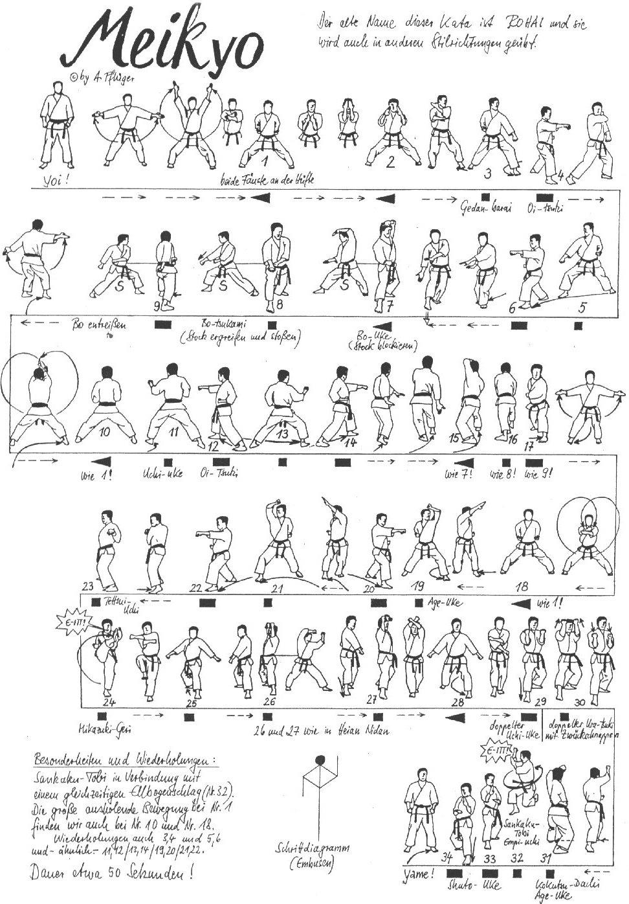

Meikyo Nidan

- Yoi andando in Hachiji Dachi
- Allargando la gamba destra passare in Kiba Dachi, entrambe le braccia eseguono un movimento circolare verticale dal basso verso l’alto e incrociandosi frontalmente vengono portate in Hikite
- In Kiba Dachi: aprire le braccia con Shuto Kakiwake Chudan e proseguire con doppio Yoko Gedan Barai
- Spostamento verso sinistra in Tsuri Ashi mantenendo il Kiba Dachi, eseguire con le braccia una circonferenza in senso orario terminando in Hidari Chudan Haito Uke e Migi Chudan Shuto Uke allo sterno
- Spostamento verso sinistra in Tsuri Ashi (speculare), eseguire la tecnica di braccia precedente in senso antiorario
- In posizione: Migi Yoko Gedan Shuto Uke
- In posizione: Tate Shuto Uke sinistro a 45°
- Richiamando la mano sinistra eseguire Mawashi Empi Uchi destro e portare entrambi i pugni al fianco sinistro
- Tate Shuto destro
- Ren Tzuki (sinistro, destro)
- Avanzare in Migi Kokutsu Dachi ed eseguire Shuto Uke
- Mawashi Empi Uchi sinistro sulla mano destra
- Allungare il braccio destro ed avanzare in Zenkutsu Dachi eseguendo Hidari Oi Tzuki Chudan verticale (KIAI)
- Richiamare la gamba destra, girarsi di 45° verso destra in Tsuru Ashi Dachi, eseguendo Migi Gedan Shuto Uke e Hidari Jodan Shuto Uke
- Scendere in Migi Zenkutsu Dachi, eseguire Migi Uchi Haito Uke con la sinistra sotto il gomito
- Trasformare Haito in presa con la rotazione del polso
- Tsuri Ashi avanzando: Hidari Mae Empi Uchi seguito da Oi Tzuki verticale
- Spostare il piede destro sulla verticale e andare in Kiba Dachi eseguendo Tettsui Uchi orizzontale
- Richiamare la gamba destra, girarsi di 45° verso sinistra in Tsuru Ashi Dachi, eseguendo Migi Gedan Shuto Uke e Hidari Jodan Shuto Uke
- Scendere in Migi Zenkutsu Dachi, eseguire Migi Uchi Haito Uke con la sinistra sotto il gomito
- Trasformare Haito in presa con la rotazione del polso
- Tsuri Ashi avanzando: Hidari Mae Empi Uchi seguito da Oi Tzuki verticale
- Spostare di 45° verso sinistra il piede sinistro, andare in Kiba Dachi eseguendo Shuto Uchi Chudan orizzontale
- Yoko Ashi verso destra in Kiba Dachi: eseguire Hidari Morote Sukui Uke Gedan (come in GojuShiho Dai)
- Avanzare in Migi Sanchin Dachi: Hidari Teisho Jodan e Migi Haito Gedan sinistro
- Allungare la posizione passando in Migi Kokutsu Dachi ed eseguire Bo Uke (Hidari Jodan e Migi Gedan)
- Piccolo Tsuri Ashi ed eseguire Bo Osae
- Mawatte in Zenkutsu Dachi facendo perno sugli avampiedi (piedi sulla stessa linea, gamba sinistra davanti)
- Spostare la gamba destra in Kiba Dachi: entrambe le braccia eseguono un movimento circolare verticale dal basso verso l’alto, incrociandosi frontalmente e portandosi in Hikite come all’inizio
- In posizione: eseguire tre Morote Tzuki verticali, iniziando con Hidari Tzuki in alto e invertendo le braccia ogni volta
- Avvicinare il piede destro, ruotare di 180° sul posto e arretrare in Migi Kokutsu Dachi Shuto
- Arretrare nuovamente in Hidari Kokutsu Dachi Shuto
- Estendere lentamente il braccio sinistro in Haishu Uchi
- Eseguire Migi Kaiten Mikazuki Geri colpendo il palmo della mano sinistra (KIAI), scendere con il piede destro vicino al sinistro e proseguire arretrando il piede sinistro in Migi Kokutsu Dachi Shuto
- Arretrare nuovamente in Hidari Kokutsu Dachi Shuto